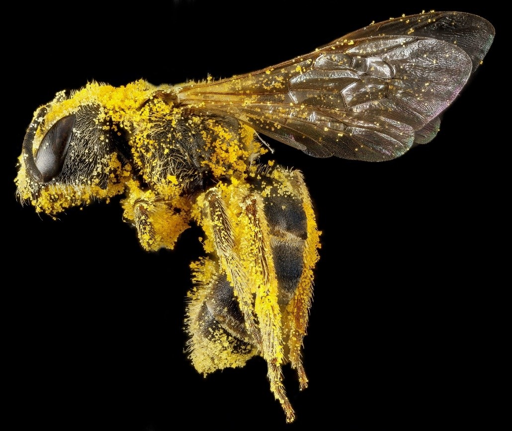
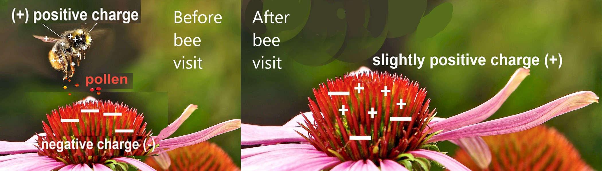

Bees need nectar from flowers to make honey. But when they go to flowers to get nectar, they end up getting pollen on their bodies (as shown above). They transfer this pollen to other flowers they visit (to get more nectar).
Bees get nectar from flowers. Bees (as well as other insects and birds) are attracted to the colorful petals of flowers and the nectar produced by plants. Nectar is a sugary, protein-rich liquid that is produced by a group of cells called the “nectary”. Nectaries can be inside the flowers (as shown in the picture below) or outside the flowers (e.g., at the base of leaves below the petals).
Nectaries inside flowers. Nectaries that are inside the flowers help plant reproduction by releasing nectar. Nectar attracts visitors such as bees and other insects, and birds.
As bees or other visitors push their bodies through the flowers to get the nectar, they accidentally brush against the stamens and the pollen from the anther sticks to their body (as shown below). As they move to the next plant, they carry this pollen. Some pollen may be transferred to the stigma of the flower, where it may tunnel down the stigma to fertilize an egg cell inside the ovary. (See the Angiosperm Reproduction unit for more details.)
This method of moving pollen from one flower to another for reproduction is called “pollination”. The visitors searching for nectar are accidental pollinators. For example, bees happen to go to the same type (species) of flower during a foraging (food collecting) trip. This behavior helps the reproduction of this species by pollinating its flowers.
The picture of the bee above shows how bees can collect quite a bit of pollen on their bodies while foraging for food. So, we can imagine how much pollen just one bee can help to share between flowers. In fact, there are several species of plants that depend on pollinators such as honey bees for reproduction. These include kiwis, watermelon, cantaloupe, and macadamia plants. Honey bees are one pollinator of sunflowers as well.
Nectaries outside flowers. Nectaries can also be located outside of the flowers (e.g., at the base of leaves and on stems). These external nectaries do not promote pollination but instead protect the plants. For example, visitors (such as wasps) come to these plants for the nectar. They protect the precious nectar by scaring away predators that eat the plants (like caterpillars).
In this picture, you can see part of the tongue (proboscis) of the bee as it feeds on the flower.
Honey bees use their long, straw-like tongues (proboscis-es) to suck the sugary and protein rich liquid called nectar, into their “honey stomach”. The honey stomach is actually not a “regular” stomach, but it is part of their throat (a pipe called esophagus). This pipe expands to store the nectar. To fill this honey stomach, honey bees visit over 100 flowers.
The nectar that a bee collects can weigh as much as the bee itself! So, you may see bees that are having a hard time flying due to all the pollen attached to them and all the nectar they collected. Once a honey bee fills its honey stomach with nectar, it is ready to go home to its family, called the “colony”. There, the honey-making process begins.
How honey is made from nectar. After a honey bee sucks nectar into its honey "stomach", special enzymes break down the complex sugars in the nectar into smaller components. Two things can happen to these smaller sugars: they are either (a) digested as food by that bee or (b) are stored for later use in honeycombs (shown in the picture below). Bees in the colony also remove some of the water from the nectar to make it very thick. They do this by working together to fan their wings to keep the right temperature and to move water vapor out of the hive.

Finished honey is a thick substance that has less water than the nectar and has smaller, less complex sugars than the nectar. When the honey is done, bees close the cells of the honeycombs with wax called beeswax. This beeswax protects the honey until bees can use it for food in the future. A colony of bees may need to eat between 1 and 200 pounds of honey each year.
Have you ever seen bees just hovering around flowers but not going inside? New research shows that bees are able to detect which flower was already visited and thus may be empty of nectar. They tend to avoid those flowers. This all has to do with a process called “static electricity” caused by electric forces.
When you drag your feet on a carpet, electrons are transferred from the carpet to your feet. As a result, your body has a slight negative charge. When you touch an object that has a less negative charge (or positive charge), you transfer electrons to that object. A similar thing happens to flowers and bees.
Bees and other things that fly through air lose electrons. As a result, they become positively charged. Similarly, when bees flutter their wings around flowers, a positive charge is created on their bodies. Flowers, and pollen inside the flowers, have a weak negative charge. So, when the bee visits the flowers, this charge difference pulls the pollen to the bee. The pollen sticks to the tiny hairs on the bee’s body. After a bee visit, the flower’s charge changes from negative to slightly positive. Bees can detect this slightly positive charge and avoid the flowers that were recently visited by others.
Just like people, honey bees need variety in their diet. Honey bees need water, sugars, proteins, vitamins, and minerals. We know honey bees collect nectar and make honey. But did you know that bees also eat the pollen from flowers that sticks to their bodies (shown below)? Though nectar does have a little bit of protein, pollen is much richer in protein than nectar. Bees also feed their queen bee pollen; the queen needs this energy to produce and lay eggs.


***Note for Teachers: You can access more information about this website and find other resources for science inquiry on the ISP Tutor website.
©2021 Klahr Lab, Carnegie Mellon University. All Rights Reserved
Carnegie Mellon University | Dept. of Psychology | 5000 Forbes Ave. | Pittsburgh, PA 15213 The TED project was funded in part by the Institute of Education Science (IES), Grant R305H060034, and in part by the National Science Foundation, Grant SBE035442. The ISP Tutor project is funded by IES, Grant R305A170176.
The research reported here was supported by the Institute of Education Sciences, U.S. Department of Education, through Grant R305A170176 to Carnegie Mellon University. The opinions expressed are those of the authors and do not represent views of the Institute or the U.S. Department of Education.